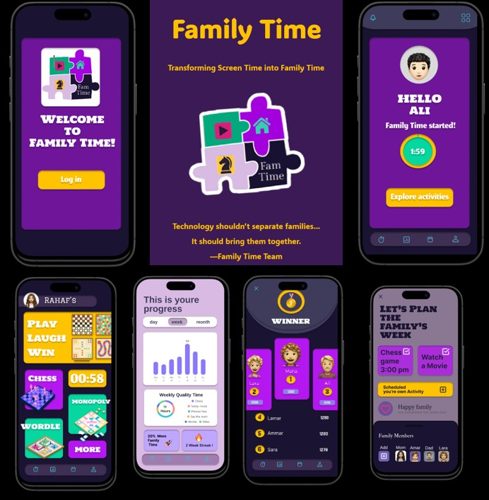
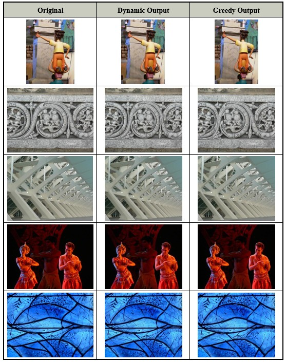

Family Time App
A high-fidelity interactive prototype created in Figma for usability testing, focusing on intuitive design and seamless navigation.

A high-fidelity interactive prototype created in Figma for usability testing, focusing on intuitive design and seamless navigation.

Implements seam carving to intelligently reduce an image's width while preserving essential content using Dynamic Programming and a Greedy Algorithm. Pixel energy is computed using a Sobel-based gradient.
